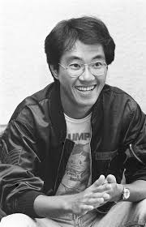
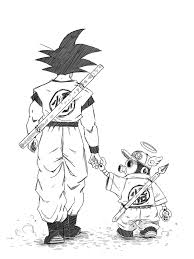
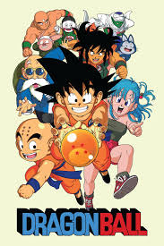
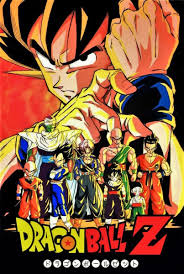
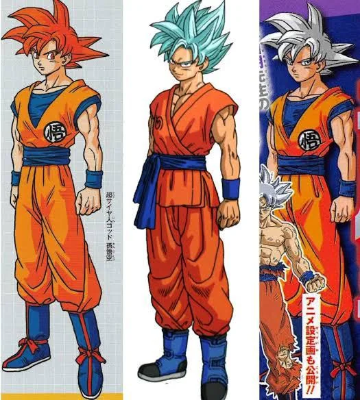
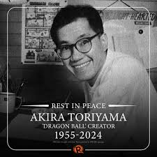

My Goat, Akira Toriyama is the creator of the most famous Manga known as DragonBall.

Art



achievement
Knight of the Order of Arts and Letters
Shogakukan Manga Award
His creation was a Olympics ambassadors in 2020.
Audience Award
Best Visual Effects Nominee
Toriyama is considered the most influential shonen manga creator in the last three decades. Subsequent generations of manga artists and animators have used his style in their works.
Akira Toriyama (1955–2024) was a manga artist most well known for his creation of Dragon Ball and Dragon Ball Z, with their anime adaptations finding critical success worldwide. Many librarians owe their love of manga, reading, and literature to Akira Toriyama because they loved his works.